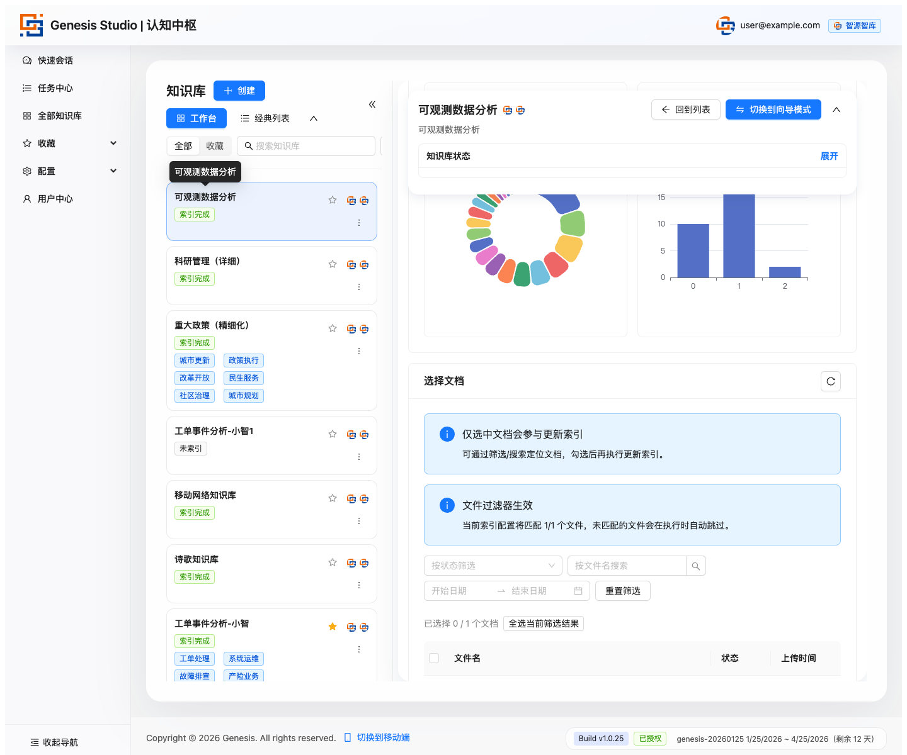
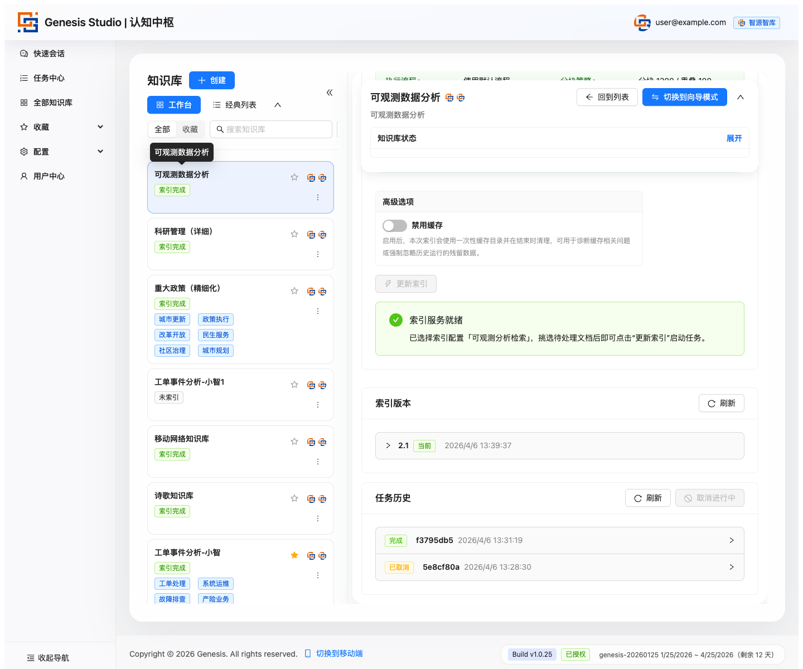
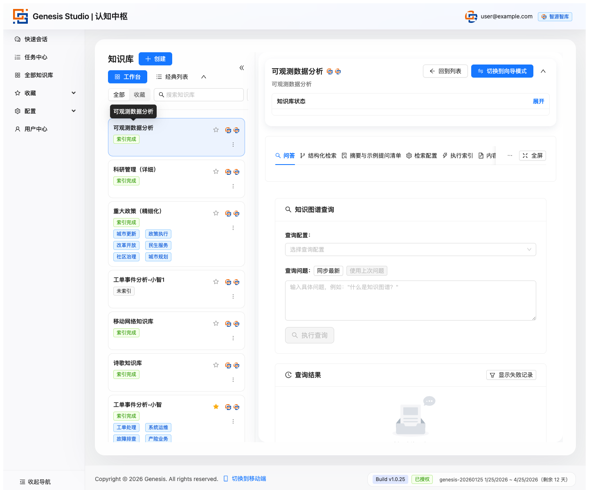

Genesis Studio 小白用户 10 分钟上手版
这份页面只讲最短上手路径，不讲技术细节。目标是帮第一次接触平台的用户， 用最短时间跑通“登录、建库、导内容、跑索引、开始提问”这条主链路。
这份页面按新用户最短使用路径组织，适合直接用于上手说明、培训讲解和图文分发。
目录
- 第 0 步：登录进入平台
- 第 1 步：进入“全部知识库”
- 第 2 步：新建一个知识库
- 第 3 步：进入“内容管理”上传资料
- 第 4 步：检查内容是不是已经可用
- 第 5 步：进入“索引配置”确认规则
- 第 6 步：进入“执行索引”真正开工
- 第 7 步：看“摘要与示例提问”
- 第 8 步：进入“问答”开始提问
登录进入平台
打开平台后，你首先会看到登录页。这里先不要想别的，只做一件事：进入系统。
从上到下，一般会看到平台标题、登录输入区和登录按钮。
进入“全部知识库”
登录后，优先看左侧导航里的“全部知识库”。这是整个使用链路的起点。
在这里你只需要先判断两件事：有没有现成知识库；如果没有，就准备新建。

新建一个知识库
第一次使用，最简单的方式是标准创建：填知识库名称、填描述，然后保存。
这里要记住：创建知识库只是先搭一个容器，真正可用还要继续导内容和跑索引。

命名建议尽量直接写用途，例如“销售投标知识库”“客服知识库”“法务条款知识库”。
进入“内容管理”上传资料
进入某个知识库以后，先看顶部导航里的“内容管理”。这里是资料进入平台的入口。
先看文件导入区
普通文档按默认方式上传即可；如果是表格型内容，尤其是 CSV，再考虑专门模式。

再看文档列表和状态
上传完成以后，不要只看“上传成功”提示，更要看文档是否进入“可索引”或“已提取”状态。

检查内容是不是已经可用
这一页要先确认三件事：
- 文档都在列表里
- 没有明显失败项
- 至少有一批文档已经进入“可索引”或“已提取”
如果这三件事没满足，就先不要往下走。
进入“索引配置”确认规则
对新用户来说，先把这一页理解成：平台要按什么方式处理你的内容。
如果系统里已有默认索引配置，第一次使用通常只需要确认它存在、名字清楚、并且和你的文档类型匹配。

进入“执行索引”真正开工
这是最关键的一步。只有执行索引后，知识库才真正开始具备回答能力。
先选文档

再选配置和版本策略

最后看任务进度和历史

等索引完成，再看“摘要与示例提问”
索引完成以后，建议先不要直接自己想问题。先看摘要页，搞清楚这个知识库大概讲什么、适合怎么问。

进入“问答”开始提问
现在你可以进入问答页，按“输入问题、选择配置、提交查询”的顺序开始使用。


第一次提问不要太宽泛，先从“这份资料主要讲什么”“某个术语怎么定义”这类具体问题开始。
最后记住这一条最短成功路径
- 登录
- 进入全部知识库
- 新建知识库
- 进入内容管理
- 上传文档
- 确认文档变成可索引
- 进入执行索引并启动任务
- 等索引完成
- 进入问答提问